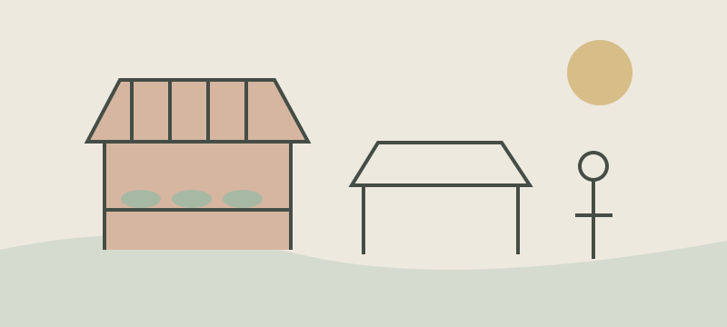

A place to read
On a quiet morning, a reader opens a book beside the window. The page asks for nothing except a little time and attention.
Reading in another language is a conversation across distance. A translation can help without taking the original voice away.
Notes from the field
A notebook holds more than facts. It preserves a question, an unexpected encounter, and a detail that might otherwise disappear.
In a small town, people gather around the market each morning. Following their everyday routes reveals connections that a map alone cannot show.

Looking closely
Good questions often begin with ordinary things: a shared meal, a familiar path, or the way a story is told.
Keep the sentence that made you pause. Add your own thought beside it, then return to the article when you are ready.
From reading to understanding
Understanding grows when we compare what we read with what we have experienced. Small notes make that comparison easier to revisit.
The best reading space gives the text room to breathe and lets the reader choose a comfortable pace.